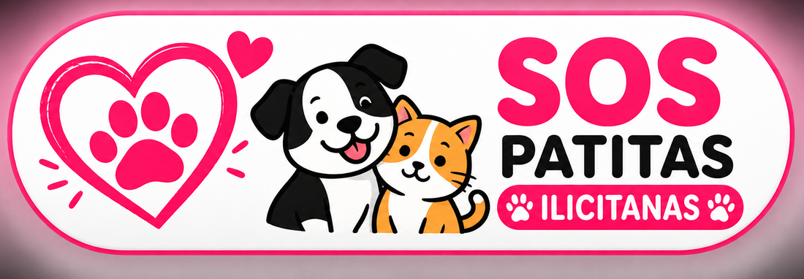

🐾 Grey
🐕 Especie: perro
📞 Contacto:
650 519 510
💬 Es sociable con gente.
⚠️ NO APTA con otros perros ni con gatos.
📞 Llamar
💬 WhatsApp
✉️ SMS
📋 Copiar teléfono
📍 Enviar ubicación GPS

🐾 Protectora colaboradora · Pulsa para contactar
🐾 SOS Patitas Ilicitanas
📞 Estrella · 651 80 53 69
📞 Laura · 622 68 45 84
✉️ sospatitasilicitanas@hotmail.com
🔗 Teaming SOS Patitas Ilicitanas